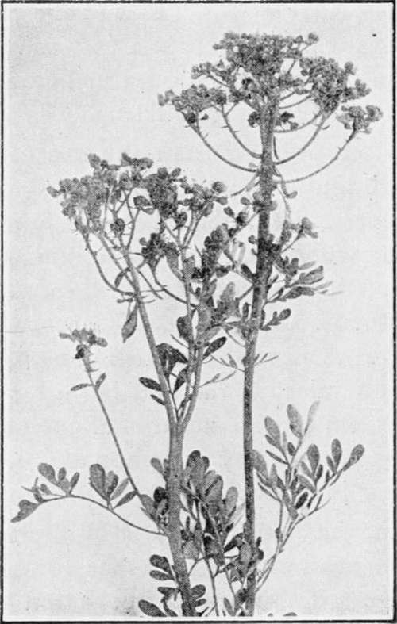

Caraway
Description
This section is from the book "Culinary Herbs", by M. G. Kains. Also available from Amazon: Culinary Herbs, Their Cultivation, Harvesting, Curing and Uses.
Caraway
Caraway (Carum carui, Linn.), a biennial or an annual herb of the natural order Umbelliferae. Its names, both popular and botanical, are supposed to be derived from Caria, in Asia Minor, where the plant is believed first to have attracted attention.
From very early ages the caraway has been esteemed by cooks and doctors, between which a friendly rivalry might seem to exist, each vying to give it prominence. At the present time the cooks seem to be in the ascendancy; the seeds or their oil are rarely used in modern medicine, except to disguise the flavor of repulsive drugs.
Since caraway seeds were found by O'Heer in the debris of the lake habitations of Switzerland, the fact seems well established that the plant is a native of Europe and the probability is increased that the Careum of Pliny is this same plant, as its use by Apicus would also indicate. It is mentioned in the twelfth-century writings as grown in Morocco, and in the thirteenth by the Arabs. As a spice, its use in England seems to have begun at the close of the fourteenth century. From its Asiatic home it spread first with Phoenician commerce to western Europe, whence by later voyagers it has been carried throughout the civilized world. So widely has it been distributed that the traveler may find it in the wilds of Iceland and Scandinavia, the slopes of sunny Spain, the steeps of the Himalayas, the veldt of southern Africa, the bush of Australia, the prairies and the pampas of America.
Caraway is largely cultivated in Morocco, and is an important article of export from Russia, Prussia, and Holland. It has developed no clearly marked varieties; some specimens, however, seem to be more distinctly annual than others, though attempts to isolate these and thus secure a quick-maturing variety seem not to have been made.
Caraway for Comfits and Birthday Cakes
Description
The fleshy root, about 1/2 inch in diameter, is yellowish externally, whitish within, and has a slight carroty taste. From it a rosette of finely pinnated leaves is developed, and later the sparsely leaved, channeled, hollow, branching flower stem which rises from 18 to 30 inches and during early summer bears umbels of little white flowers followed by oblong, pointed, somewhat curved, light brown aromatic fruits-the caraway "seeds" of commerce. These retain their germinating power for about three years, require about 10,000 seeds to make an ounce and fifteen ounces to the quart.
Cultivation
Frequently, if not usually, caraway is sown together with coriander in the same drills on heavy lands during May or early June. The coriander, being a quick-maturing plant, may be harvested before the caraway throws up a flowering stem. Thus two crops may be secured from the same land in the same time occupied by the caraway alone. Ordinary thinning to 6 or 8 inches between plants is done when the seedlings are established. Other requirements of the crop are all embraced in the practices of clean cultivation.
Harvest occurs in July of the year following the seeding. The plants are cut about 12 inches above ground with sickles, spread on sheets to dry for a few days, and later beaten with a light flail. After threshing, the seed must be spread thinly and turned daily until the last vestige of moisture has evaporated. From 400 to 800 pounds is the usual range of yield.
If seed be sown as soon as ripe, plants may be secured which mature earlier than the main crop. Thus six or eight weeks may be saved in the growing season, and by continuing such selection a quick-maturing strain may be secured with little effort. This would also obviate the trouble of keeping seed from one year to the next, for the strain would be practically a winter annual
Uses
Occasionally the leaves and young shoots are eaten either cooked or as an ingredient in salads. The roots, too, have been esteemed in some countries, even more highly than the parsnip, which, however, largely because of its size, has supplanted it for this purpose. But the seeds are the important part. They find popular use in bread, cheese, liquors, salads, sauces, soups, candy, and especially in seed cakes, cookies and comfits. The colorless or pale yellow essential oil distilled with water from the seeds, which contain between 5% and 7 1/2% of it, has the characteristic flavor and odor of the fruit. It is extensively employed in the manufacture of toilet articles, such as perfumery, and especially soaps.
Continue to:
- prev: Borage
- Table of Contents
- next: Catnip, Or Cat Mint